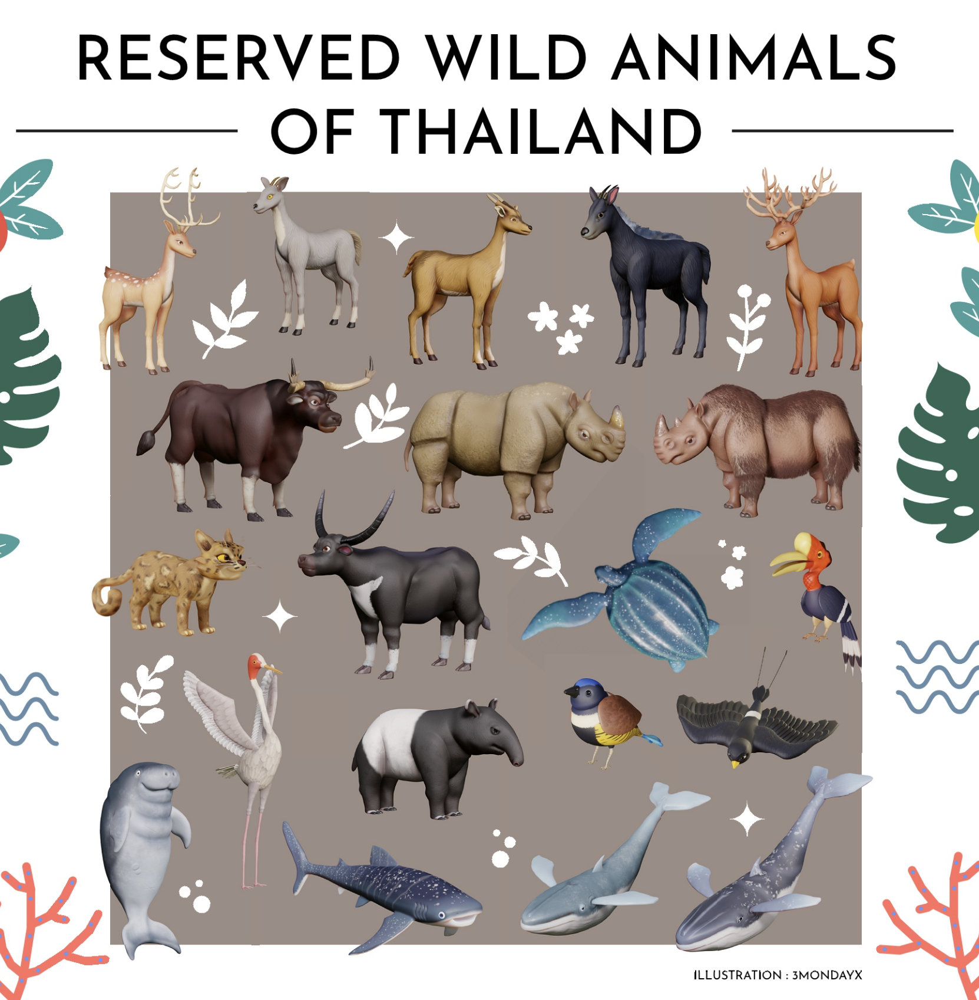

Thailand is a treasure trove of incredible biodiversity, and we believe it's essential to harness the power of AI to protect and celebrate its unique species. With BeloveThaiAI, our goal is to track animal behavior and location in real-time using advanced AI technology. This will provide vital data that helps conserve and celebrate Thailand’s breathtaking wildlife! 🐅🌏
"BeloveThaiAI" stands for:
- Behavior: Unlocking the mysteries of wildlife behavior through AI 🐒🧠.
- Location: Monitoring animal movements across Thailand's diverse landscapes in real-time 🌍🐾.
- Verification: Ensuring the accuracy of our data for trustworthy, impactful insights ✅📊.
- Thai: Embracing and protecting Thailand's rare and remarkable wildlife for future generations 🦋🌳.
